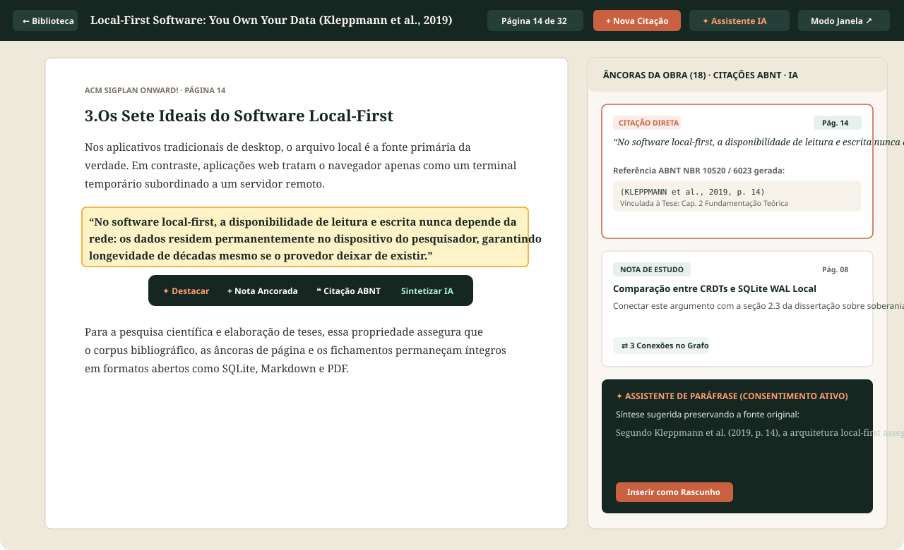
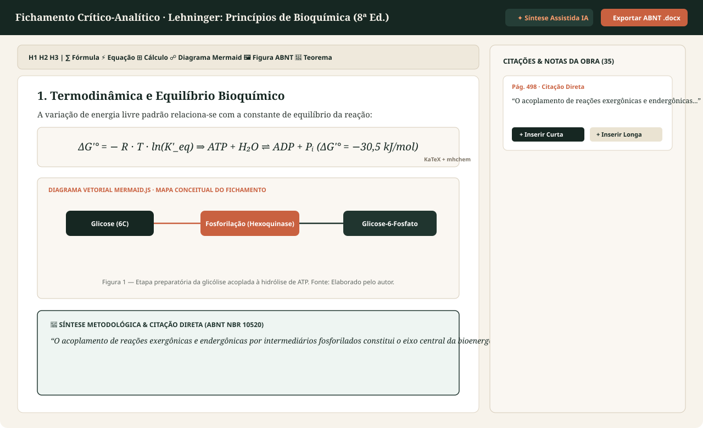
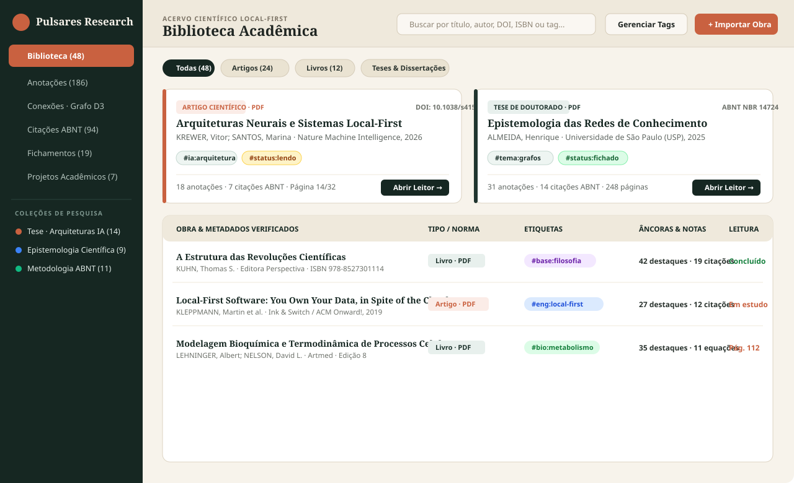
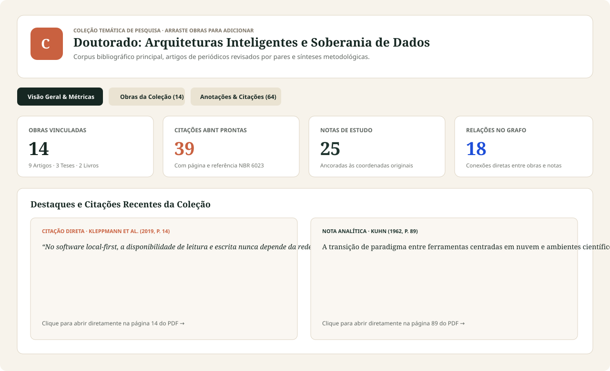
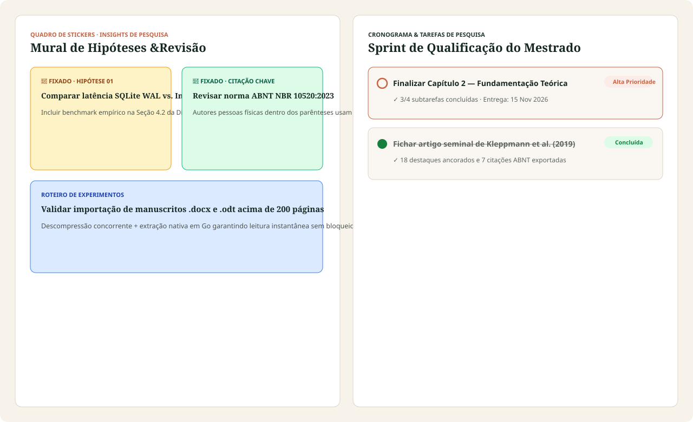

Projetos v0.7.1
IDE de Projetos Acadêmicos ABNT
Ambiente em 3 colunas com árvore de capítulos, prévia de Folha A4 ABNT (NBR 14724/6022) e compilação automática de referências.
Design Editorial & Densidade Acadêmica
Clique em qualquer tela para inspecionar em alta resolução os módulos do Pulsares Research.
Ambiente em 3 colunas com árvore de capítulos, prévia de Folha A4 ABNT (NBR 14724/6022) e compilação automática de referências.

Detecção automática de Headings, elementos pré-textuais e referências, com vinculador manual de Bookmarks H1/H2/H3.

Seleção de trechos para destacar, criar notas ancoradas, gerar citações ABNT NBR 10520 e acionar síntese assistida por IA.

Equações matemáticas LaTeX, reações químicas mhchem, diagramas vetoriais Mermaid.js e blocos de Figura ABNT em disco.

Mapa interativo de relações epistemológicas (fundamenta, complementa, contradiz, aprofunda) entre obras, notas, citações e coleções.

Catálogo bibliográfico SQLite com busca instantânea, filtros combináveis e etiquetas estruturadas em grupo.

Painel dedicado para cada linha de pesquisa com métricas de obras, notas, citações e adição rápida via Drag & Drop.

Mural visual de hipóteses de pesquisa e listas de tarefas com subtarefas e prioridades semânticas.